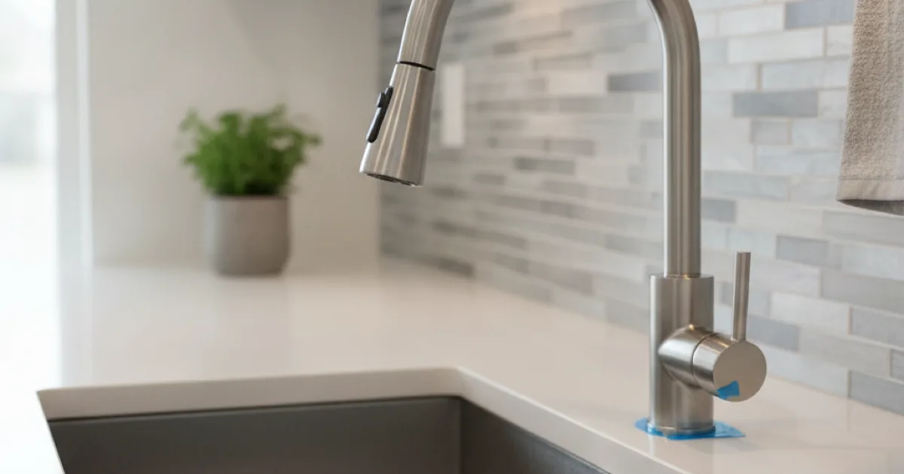
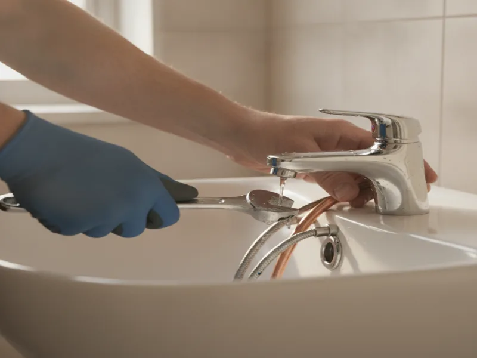

Faucet Installation in Armonk, NY
A new kitchen or bathroom faucet is a small upgrade that makes a big difference. We install it cleanly, with no leaks and no surprises on the bill.
- Licensed & Insured
- Upfront Pricing
- Same-Day Service Available
- Clean, Respectful Technicians

Our faucet installation process
We start by shutting off the water supply to the fixture and removing the old faucet, checking the condition of the supply lines and shutoff valves underneath while we're there. Old, corroded valves are a common find, and it's worth replacing them at the same time rather than connecting a brand-new faucet to worn-out parts.
From there we set the new faucet, connect fresh supply lines if needed, and seal it properly at the sink deck to prevent water from getting underneath. Before we call it done, we run the water at full pressure and check every connection for even the smallest drip.

What affects the cost
The faucet itself varies widely in price, but the bigger cost factor is usually what's happening underneath the sink. Corroded shutoff valves, old or mismatched supply lines, and unusual mounting configurations all add time to the job.
Pull-down kitchen faucets and touchless models also tend to take a bit longer to install than a standard two-handle bathroom faucet, simply because there's more to connect and test.
Local factors for Armonk homes
A lot of the faucet installations we do in Armonk are part of a smaller kitchen or bathroom refresh — homeowners upgrading a faucet, and maybe a sink or a few fixtures alongside it, without committing to a full remodel. It's a practical way to modernize a space a little at a time.
If you're comparing faucet finishes or features and want an independent read on durability and performance, Consumer Reports' faucet buying guidance is a useful resource before you commit to a specific model.
Keeping your new faucet leak-free
Most new faucets need very little maintenance. It's worth periodically checking underneath the sink for any dampness, and cleaning the aerator if water flow starts to slow down, since mineral buildup there is common with our local water.
Avoid over-tightening handles or using excessive force, which can wear out internal cartridges faster than normal use would.
When to call a professional
Call us if you notice a drip after installation, if the shutoff valves underneath are corroded or difficult to turn, or if you're upgrading to a faucet style that requires different mounting holes than what you currently have. Getting the seal and connections right the first time is what prevents slow leaks under the cabinet later.
If you're planning to update more than just the faucet, installing a new sink alongside your faucet or swapping out other worn fixtures at the same time can be more efficient than tackling each one separately. For a bigger project, a larger kitchen plumbing refresh might be worth discussing instead.
Take a look at our broader fixture and plumbing services for everything else we handle around the house.
Frequently asked questions
How long does faucet installation take?
Most installations take under two hours, though it can take longer if the shutoff valves or supply lines underneath need to be replaced first.
Can you install a faucet I've already purchased?
Yes. We're happy to install a faucet you've picked out, or recommend one that fits your kitchen or bathroom and budget.
Will a new faucet fit my existing sink?
In most cases, yes, though mounting hole configurations vary between styles. We check this before installation so there are no surprises.
Why is my new faucet dripping?
A drip after installation usually means a loose connection or a worn washer that needs attention. If that happens, call us and we'll take a look.
Should I replace the shutoff valves when I install a new faucet?
If the existing valves are old or corroded, yes. It's much easier to replace them during the faucet install than to deal with a failed valve later.
Do you offer same-day faucet installation?
Often, yes. Faucet installations are quick, common jobs that we can usually fit into a same-day appointment.